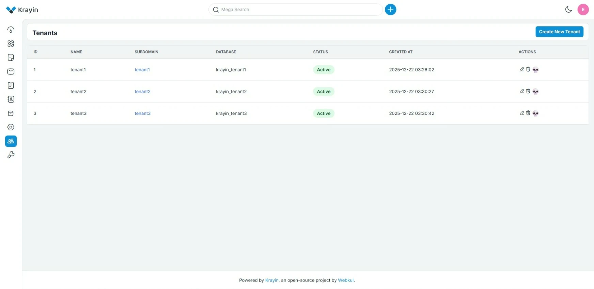

Krayin Multi-Tenancy.
A multi-tenancy extension for Krayin CRM that isolates organizations using a true database-per-tenant architecture.
Tenant Isolation for CRM at Scale.
The package enables multiple organizations to run on one Krayin instance with isolated databases, reducing data leakage risk and simplifying tenant lifecycle management.
It supports landlord/tenant separation, tenant DB provisioning, migration tooling, and domain/subdomain routing patterns suitable for real SaaS deployments.
- Publish package config and migrations.
- Create tenant records from the landlord panel.
- Provision isolated tenant databases automatically.
- Run tenant migrations with dedicated artisan commands.

Built for Practical Multi-Tenant Operations.
Krayin Multi-Tenancy focuses on operational reliability by keeping tenant data isolated while preserving a clean workflow for onboarding and migrations.